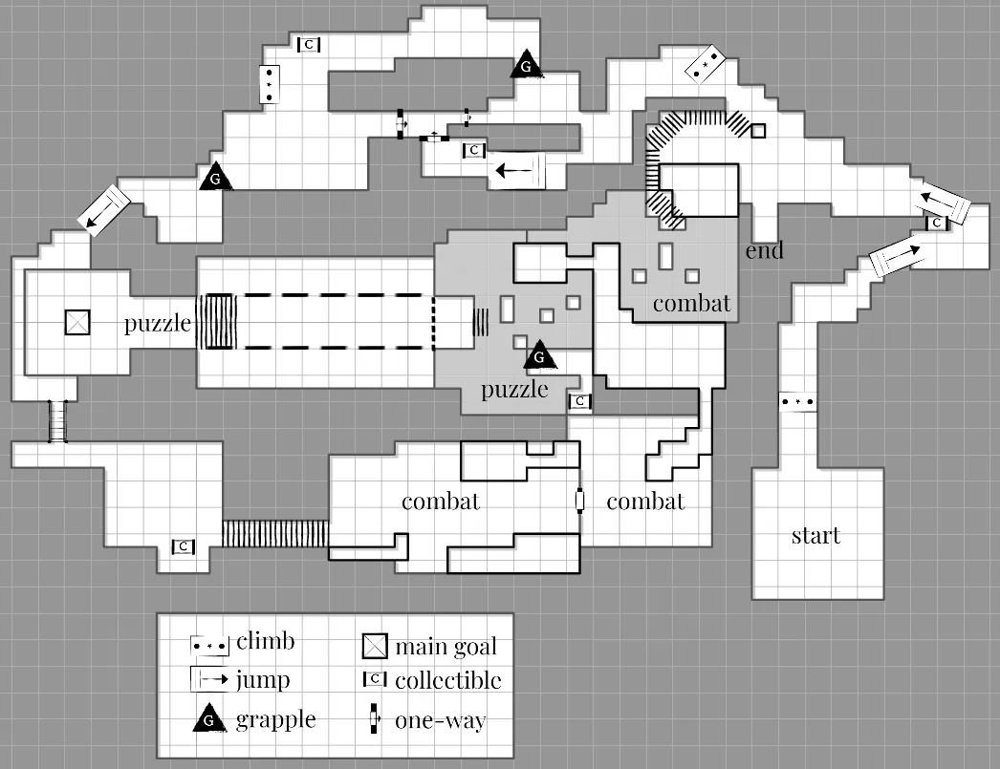
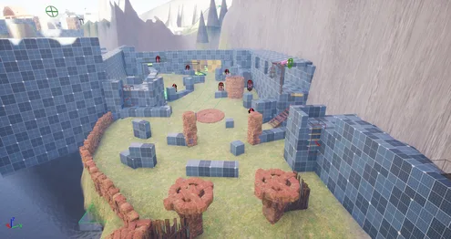
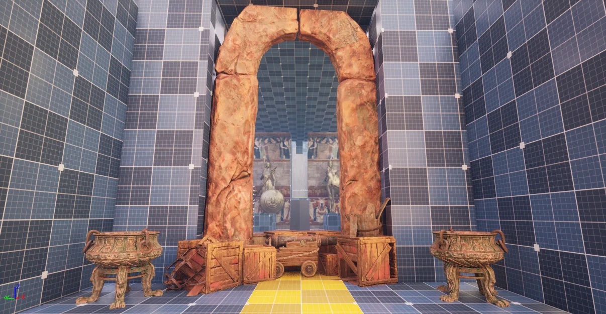
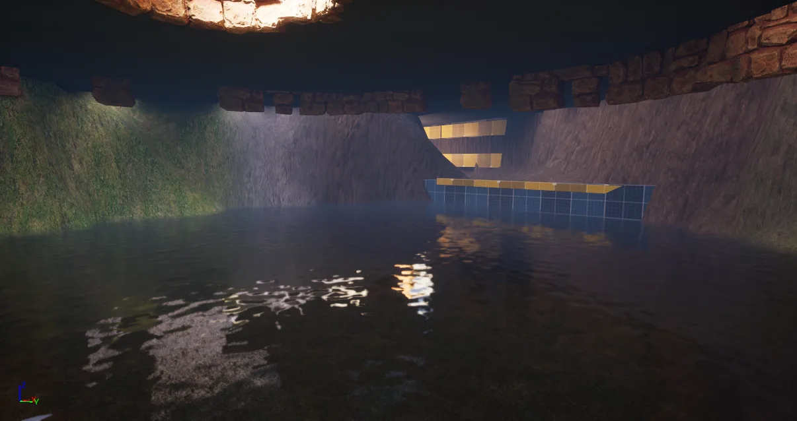
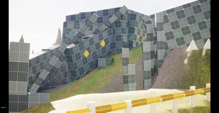

01Context
Learn the engine through one level
- Project
- Workshop project, single player
- Engine
- Unreal Engine 5
- Genre
- Third-person action adventure
- My role
- Level designer
- Development time
- 3 months
- Play time
- About 25 minutes
Challenge: a circular level that guides the player around the main objective at the centre.
02The mission
An archaeologist, an artifact and a race
An island in the Caribbean Sea. Find the artifact in the ancient tower before the mercenaries do, then escape.
- 01 Find the entrance to the temple
- 02 Get the grappling hook
- 03 Fight waves of enemies
- 04 Solve the puzzle that opens the temple
- 05 Solve the puzzle that protects the artifact
- 06 Escape from the island
- Side Treasures, the jungle abyss, a stealth run
03Layout
A loop around the temple
- Landmark The temple at the centre is always the goal
- Sightlines Views to the temple open and close along the loop
- Planning Flow chart, pacing graph, bubble diagram, 2D map, golden path




04Gameplay
Combat, puzzles and traversal
- Items Grappling hook for free exploration, rifle, pistol, treasures
- Puzzles Falling platforms, a pushable object and a pressure plate
- Combat Three approaches per zone, plus a smaller circular arena



05Post mortem
What worked and what did not
Worked
Clear orientation. The linear temple entrance, the combat zone and the first puzzle area.
Did not work
The loop became repetitive, removed the feeling of being lost and limited the jungle.
Possible fix
A central tower to move through along the radius, with visits to its lower levels.
Next time
Start more open and let the layout grow from play.